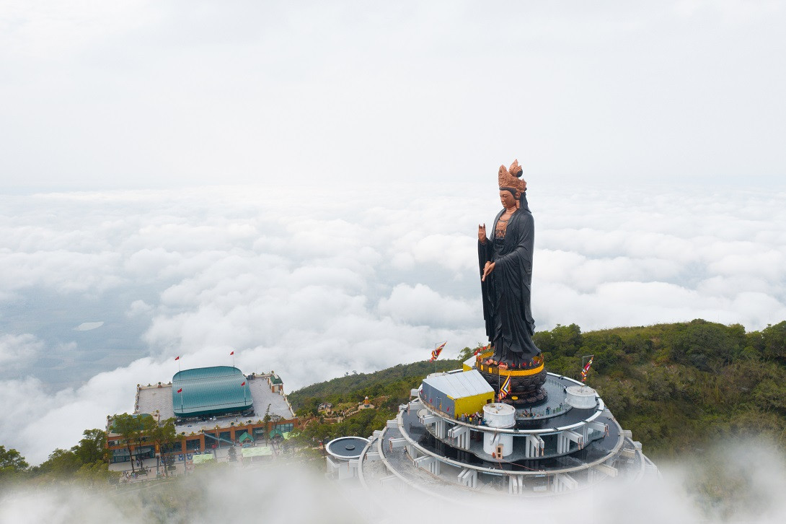
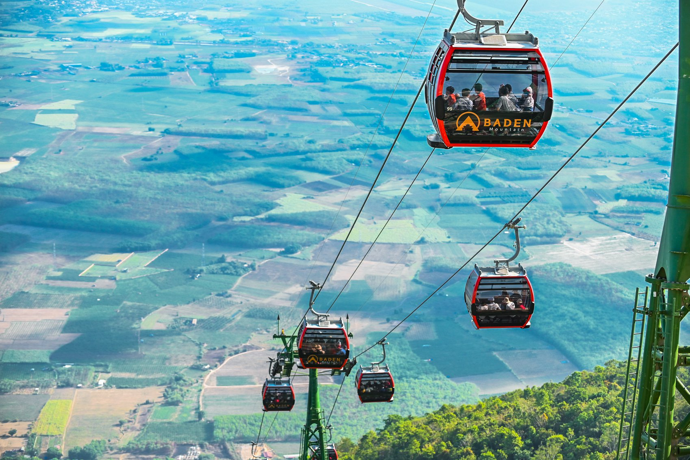

VÒNG QUANH VIỆT NAM

Chào mừng đến với Núi Bà Đen!
Núi Bà Đen là một địa điểm đẹp nằm ở phía Đông Bắc của thành phố Tây Ninh, thuộc quần thể di tích văn hóa lịch sử núi Bà Đen, cách TP Hồ Chí Minh khoảng 100km.
Núi Bà Đen Tây Ninh là ngọn núi cao nhất Nam Bộ, với độ cao là 986m. Núi có diện tích vào khoảng 24 km², bao gồm 3 núi nhỏ là: Núi Bà Đen, núi Phụng, núi Heo. Trên núi có hệ thống các chùa gồm: chùa Bà, chùa Hang, chùa Trung thu hút đông khách du lịch đến tham quan, vãn cảnh, dâng hương.
Núi Bà Đen có gì?
Núi Bà Đen sở hữu một khung cảnh thiên nhiên hữu tình, hùng vĩ. Từ trên đỉnh núi nhìn xuống có thể dễ dàng quan sát cả một vùng đất Tây Ninh rộng lớn, những con sông chằng chịt vắt qua nhau, cùng với đó là những đám mây trôi bồng bềnh.Nơi đây còn là một địa điểm lý tưởng để trải nghiệm và chinh phục những cung đường trekking hấp dẫn ở Nam Bộ nói riêng và ở nước ta nói chung. Đây chắc chắn sẽ là một nơi có thể giúp bạn thỏa mãn tinh thần phiêu lưu, hiếu kỳ của bạn.
Núi Bà Đen là biểu tượng cho con người Tây Ninh, với cái tên tráng lệ là “Đệ Nhất Thiên Sơn”. Qua nhiều năm xây dựng, trùng tu, nơi đây đã trở thành Khu Di Tích Lịch Sử Văn Hoá – Danh Thắng và Du Lịch với đầy đủ các dịch vụ du lịch thu hút khách du lịch từ khắp mọi miền tổ quốc.
Các hoạt động bạn nên thử khi du lịch núi Bà đen:
Chơi đâu?
Chùa Bà tọa lạc ở độ cao hơn 350m so với mực nước biển, chùa Linh Sơn Thạch Tự hay còn gọi là chùa Bà là nơi thờ Bà Đen. Đây là ngôi chùa cổ có tuổi đời hơn 300 năm và cũng chính là dấu mốc chói lọi đánh dấu sự đổ bộ của con người cũng như Phật giáo đến mảnh đất Tây Ninh này.
Đỉnh núi Bà Đen Đỉnh Núi Bà Đen cao 986m so với mực nước biển đích thực là địa điểm mà du khách nào khi đến khu du lịch Núi Bà Đen cũng khao khát được chinh phục. Vì ở trên cao nên khí hậu ở đây vô cùng mát mẻ và tầm nhìn thoáng đãng bao quát khắp thành phố với những thửa ruộng xanh ngát bên dưới.
Ma Thiên Lãnh Đây là một điểm du lịch quen thuộc ở núi Bà Đen Tây Ninh. Ma Thiên Lãnh khá vắng vẻ và hoang sơ bởi không có quá nhiều khách du lịch đến đây. Ở đây có hồ nước xanh ngọc bao la bát ngát, mặt nước phẳng lặng như một tấm gương sáng phản chiếu ánh nắng của bầu trời cao rộng. Xung quanh hồ nước là khu đất xanh bạt ngàn cùng những cánh rừng hùng vĩ.
